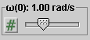

There are four basic control buttons. They are, from left to right:
-
 Rewind. Resets the simulation to the starting
point with the previously chosen values for the
system parameters. After clicking Replay, click Play
to restart the motion.
Rewind. Resets the simulation to the starting
point with the previously chosen values for the
system parameters. After clicking Replay, click Play
to restart the motion.
-
 /
/ Play/Pause. Clicking starts the
motion.
Play/Pause. Clicking starts the
motion.
After Play has been clicked, the button will change into the Pause button
. Click it if you want to take a
'snapshot' of the motion at a given instant. To
resume the motion, click Play once more.
- Step. Lets you step through the motion in equal time steps. The step size can be adjusted with the Time Step slider. See Point 6. In the Incremental mode (see Point 7), one must Step through the motion. Continuous Play is disabled.
-
 Reset. Resets the applet to its default
setting.
Reset. Resets the applet to its default
setting.
Adjustments in the system parameters can only be made after first clicking REPLAY or RESET.


This toggle button lets you display/hide the circular blue path of the mass point. Angular positions in rad are indicated at the quarter points of the circle.
After clicking Rewind or Reset, the mass point can be dragged to any starting position along the circle.
This toggle button lets you display/hide the path of the tip of the velocity vector whose tail end is fixed at the origin. The path is shown in magenta. When the length of the arrow representing the velocity is scaled with the Zoom Slider (see Point 6 below) the velocity trace is scaled acccordingly.
If you click Rewind, set the initial velocity to a different value, and Play the motion while the Velocity Trace button is selected, the velocity traces of all previous motions will remain displayed in grey while the new velocity trace is being drawn in magenta.

The applet can be run in two modes: the "Continuous" mode or the "Incremental" mode. For details, see Point 7 below. The content of the Data box depends on the mode. In either mode, you can display/hide the Data box with the Data toggle button and you can click on the Data box and drag it to a convenient location or even off the screen.
Continuous Mode.
In the Continuous mode, the Data box lists the following data, as illustrated in the preceding image.
Top half. Constants of the motion and initial values.
- d: initial phase angle; equal to q(0) (see below)
- arad(0): absolute value of the radial component of the acceleration of the mass point at t = 0
- atan(0): absolute value of the tangential component of the acceleration of the mass point at t = 0
- a(0): absolute value of the acceleration of the mass point at t = 0
Note. The phase angle d can be chosen before starting the motion by dragging the mass point in its circular orbit.
Bottom half. Values of time-dependent quantities at time t.
- t: time elapsed since the beginning of the motion
- q(t): phase angle of mass point at time t; q(0) = d
- w(t): angular velocity of mass point at time t
- v(t): "circle velocity" of the mass point at time t; the circle velocity is a scalar quantity that can take on both positive and negative values; it is positive for counter-clockwise motion and negative for clockwise motion; its absolute value is equal to the speed of the mass point
- arad(t): absolute value of the radial component of the acceleration of the mass point at time t
- atan(t): absolute value of the tangential component of the acceleration of the mass point at t
- a(t): absolute value of the acceleration of the mass point at t
Incremental Mode.
In the Incremental mode, the Data box lists the following data, as illustrated in the preceding image. The subscripts "i" and "f" refer to the initial and final instant, respectively, of a given time step. Vectors are given in terms of their x and y components, where the x-axis points to the right and the y-axis upward.
- d: initial phase angle
- ti: time at beginning of time step
- tf: time at end of time step
-
 i: position vector at beginning of
time step
i: position vector at beginning of
time step
-
f: position vector at end of time
step
-
D: change in position vector
during given time step
-
 i: velocity vector at beginning of
time step
i: velocity vector at beginning of
time step
-
f: velocity vector at end of time
step
-
D: change in velocity vector
during given time step
-
 i: acceleration vector at beginning
of time step
i: acceleration vector at beginning
of time step
- wi: angular velocity at beginning of time step
- vi: circle velocity at beginning of time step; for explanation of the term "circle velocity" see the Data box entry under "Continuous Mode" above
- arad i: absolute value of the radial component of the acceleration of the mass point at beginning of time step
- atan i: absolute value of the tangential component of the acceleration of the mass point at beginning of time step


The Vectors toggle button lets you display/hide the Vector Panel illustrated in the preceding image. Selecting a vector in this panel will cause that vector to be displayed. In the Continuous mode, all vectors listed in the panel can be displayed. In the Incremental mode, the acceleration component vectors and the force vectors are unavailable.
The items available in the panel (only some of which are selected in the preceding image) have the following interpretation:
- position: position vector of mass point; shown in cyan
- velocity: velocity vector of mass point, with tail end either at origin or at mass point; shown in magenta
- acceleration: acceleration vector of mass point, with tail end either at origin or at tip of velocity vector or at mass point; shown in orange
- acc. comps.: radial and tangential acceleration component vectors, with tail ends either at origin or at tip of velocity vector or at mass point; shown in pale orange
- force: net force acting on mass point; shown in blue
- force components: radial and tangential components of the net force; shown in pale blue
There are eight sliders in all, arranged in two rows of four each. Clicking on a slider to the left or right of the slider tab allows fine adjustment of the slider setting.
Clicking on the Input Dialog button  of a slider will open a dialog for entering an exact
value for the slider setting. The dialog for the
r-slider is illustrated below. The range in which
values can be entered, from 0.10 m to 0.30 m in this case,
is indicated above the data entry field.
of a slider will open a dialog for entering an exact
value for the slider setting. The dialog for the
r-slider is illustrated below. The range in which
values can be entered, from 0.10 m to 0.30 m in this case,
is indicated above the data entry field.

First Row
-

lets you set the radius r of the circle on which the mass point is moving between 0.10 m and 0.30 m

-

lets you set the initial angular velocity w(0) between 0.50 rad/s and 2.00 rad/s
-

lets you set the initial "circle velocity" v(0) of the mass point in the range fromr to×w(0)minr ; thus, setting the r-slider to a different value will affect the range of the v(0)-slider; for an explanation of the term "circle velocity" see under "Continuous Mode" in Point 4, "Data"×w(0)max
-

lets you set the size of the time step Dt by which the Step button advances the motion between 0.01 s and 1.00 s
Second Row
-

lets you set the mass m of the mass point between 0.50 kg and 2.00 kg; the width of the dot representing the mass point increases as the mass value increases
-

lets you set the initial angular acceleration a(0) between -0.50 rad/s2 and 0.50 rad/s2
-

lets you set the initial rate of change of the circle velocity dv/dt(0) betweenr to×a(0)minr ; thus, setting the r-slider to a different value will affect the range of the dv/dt (0)-slider; for an explanation of the term "circle velocity" see under "Continuous Mode" in Point 4, "Data"×a(0)max
-
lets you set the size of the scale factor for displaying vectors and any traces; the range of the scale factor is from 1 and 20; the different vectors will be affected as follows:
position - no change
velocity - proportional to scale factor
acceleration - proportional to square of scale factor
force - proportional to square of scale factor

The applet can be run in one of two modes, the "Continuous" and "Incremental" modes. The mode is selected by clicking the appropriate radio button.
A typical applet display in the Continuous mode is pictured in the following image. The image shows
- the position vector (blue),
- two copies of the velocity vector (magenta),
- and the acceleration vector (orange) with its tail end at the tip of the velocity vector whose tail end is fixed at the origin,
- plus the mass point's trace (blue) in position space and the trace (magenta) of the velocity vector that has its tailed fixed at the origin.
A typical applet display in the Incremental mode is pictured in the following image. The image shows
- the position vector at the initial instant (dark blue) and at the final instant (light blue) of the given time step and the corresponding change in the position vector (dark blue),
- the velocity vector at the initial instant (dark magenta) and at the final instant (light magenta) and the corresponding change in the velocity vector (dark magenta),
- and the acceleration vector (orange) at the beginning of the given time step,
- plus the traces of the position and velocity vectors.

The content of the Data box is different in the two modes, as described in Point 4, "Data".